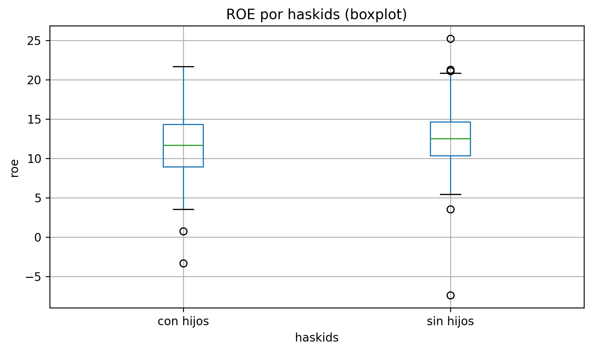

.cov() y .corr() devuelven matrices (2×2 si son 2 variables).
7. Boxplots
plt.boxplot(df["roe"].dropna())plt.title("Boxplot de ROE")plt.ylabel("roe")plt.show()
Por grupo:
df.boxplot(column="roe", by="haskids")plt.title("ROE por haskids (boxplot)")plt.suptitle("") # quita el título automáticoplt.xlabel("haskids")plt.ylabel("roe")plt.show()

8. Aplicación con datos reales (opcional, online)
Si quieres practicar con bases reales, puedes usar conjuntos de datos educativos (por ejemplo, paquetes como wooldridge).
Esto requiere instalación y/o internet, por eso en Quarto no se ejecuta.
# En VSCode: pip install wooldridge# En Colab: !pip -q install wooldridgeimport wooldridge as wooimport numpy as npimport pandas as pdimport matplotlib.pyplot as pltaffairs = woo.dataWoo("affairs")# Frecuencias y tablasaffairs["ratemarr"].value_counts()pd.crosstab(affairs["ratemarr"], affairs["kids"], normalize="index")ceosal1 = woo.dataWoo("ceosal1")# Histograma (frecuencia y densidad)plt.hist(ceosal1["roe"], bins=20)plt.title("Histograma de ROE (ceosal1)")plt.show()plt.hist(ceosal1["roe"], bins=20, density=True)plt.title("Histograma de ROE (densidad, ceosal1)")plt.show()# ECDFx = np.sort(ceosal1["roe"].to_numpy())y = np.arange(1, len(x) +1) /len(x)plt.plot(x, y)plt.title("ECDF de ROE (ceosal1)")plt.ylim(0, 1)plt.show()# Estadísticos y matricesceosal1[["salary", "roe"]].describe()ceosal1[["salary", "roe"]].cov()ceosal1[["salary", "roe"]].corr()# Boxplotceosal1.boxplot(column="roe")plt.title("Boxplot de ROE (ceosal1)")plt.show()
Ejercicios propuestos
Frecuencias + barras
Calcula value_counts() de marriage y grafica barras horizontales.
Respuesta esperada: 3 barras con los conteos por categoría.
Crosstab normalizado por filas
Crea pd.crosstab(marriage, haskids, normalize="index").
Respuesta esperada: cada fila suma 1.
Frecuencia vs densidad
Grafica dos histogramas de roe: uno con density=False y otro con density=True.
Respuesta esperada: cambia la escala del eje y (frecuencia vs densidad).
ECDF y percentil
Construye la ECDF de roe y estima el valor del percentil 90.
Respuesta esperada: un número cercano a df["roe"].quantile(0.9).
Cov y corr
Calcula cov() y corr() para salary y roe.
Respuesta esperada: dos matrices 2×2.
Boxplot por grupo
Crea un boxplot de roe por haskids.
Respuesta esperada: 2 cajas (una por cada categoría de haskids).